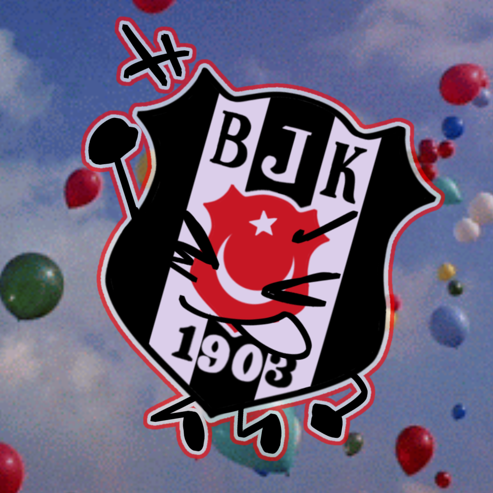

Description for SPOILER_Untitled1072_20240928221606.png
Here's a detailed description of the image:
Overall Impression: The image is a whimsical and cartoonish representation of the Beşiktaş J.K. football club logo set against a backdrop of balloons floating in a blue sky. The logo has been anthropomorphized with arms, legs, and facial features, giving it a lively, animated appearance.
Background: The background is a soft, slightly blurred image of a blue sky dotted with colorful balloons of various sizes. This creates a festive and cheerful atmosphere.
Logo:
• Design: The logo itself is based on the real Beşiktaş J.K. club emblem, featuring black and white vertical stripes around a red circle containing a white crescent moon and star (a symbol of Turkey). The letters "B J K" are positioned at the top, and "1903" at the bottom.
• Anthropomorphism: The unique aspect is the addition of cartoonish limbs and facial features. It has arms and legs with rounded hands and feet. Simple black lines have been added to create expressive eyes and a mouth, giving the logo character.
• Outline: The entire logo has been outlined with a thin, bright red border, making it stand out from the background.
Style: The image is drawn in a playful, cartoon style. It feels like a fun and lighthearted interpretation of the sports logo, making it visually appealing and memorable. The overall effect is cheerful and whimsical.
